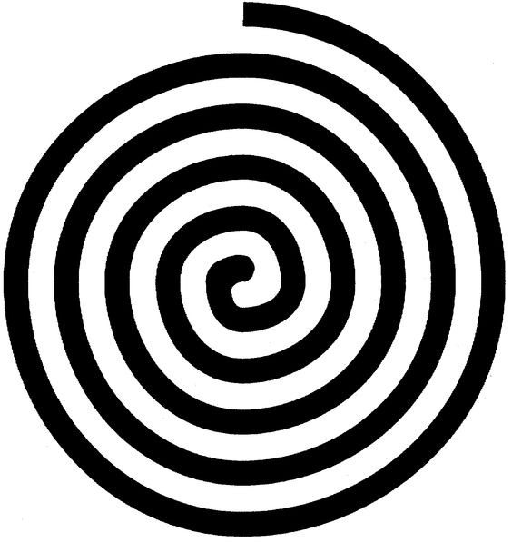

The waterfall methodology consists of Four sectors:
These four quadrants are repeated until a product
that the customer is happy with is prototyped. This
Product becomes the final outcome.
The spiral model was created by applying the AGILE
philosophies to the waterfall method, resulting in a
methodology very similar to RAD. As such, it is often applied
in situations where Significant changes are expected in the
product during the development cycle, the customer is not
entirely sure of their requirements, and the product can be
modulised in order to be delivered in an incremental manner.
| Pros | Cons |
|---|---|
| Good for risk/complex projects. | Can be very expensive indeed. |
| Users see a product early on. | Does not prioritize efficient code. |
| Changing requirements can be accomodated. | Process is quite complex. |
1. How many sectors are there?
2. What disadvantage does it have compared to the waterfall model?
3. What does the Spiral methodology have in common with RAD?
4. When is the spiral methodology ideal?